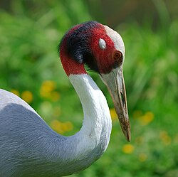
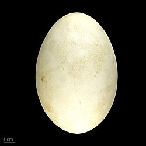
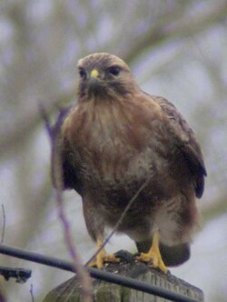
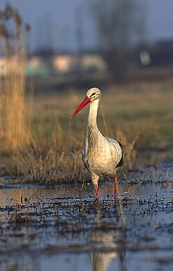
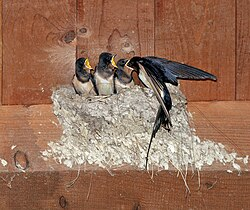
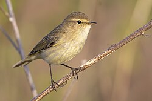

Continuació de la PR1
A la primera part vaig seleccionar el dataset bird_migration_with_origin_destination (10.000 aus, 40+ variables) i vaig definir sis preguntes de recerca sobre distància, meteorologia, hàbitat, bandades, altitud i calendari migratori. El professor va acceptar la proposta però va demanar enriquir amb fonts reals i evitar un simple dashboard.
Aquesta PR2 implementa «Rutes en joc»: visualització narrativa amb mapa i gràfics interactius, més context IUCN/BirdLife per contextualitzar el risc de conservació malgrat que les trajectòries siguin sintètiques.
Espècies del projecte
Noms del dataset (grups genèrics) amb fotos orientatives incloses al projecte (origen: Wikimedia Commons).






1. On connecten les rutes?
Mapa de fluxos agregats entre zones d'origen i destí. La gruixor indica el nombre de trajectes; el color, la taxa d'èxit migratori.
Cada arc connecta una zona d'inici i una de final. Un gruix major indica més trajectes similars; el color verd mostra més èxits migratoris i el vermell, més fracassos. Els indicadors superiors resumeixen la mostra segons els filtres actius.
Conclusió: les rutes es distribueixen per tots els continents del dataset; globalment l'èxit migratori ronda el 51% (simulació equilibrada). En filtrar per espècie o regió, els arcs i KPIs mostren on es concentren fluxos més exitosos o més interromputs.
2. Distància i durada per espècie i regió
Pregunta clau 1 de la PR1: quines espècies i regions associen migracions més llargues?
Les barres més altes corresponen a migracions més llargues (km). El color de cada barra reflecteix la proporció d'èxit: ajuda a veure si les distàncies extremes coincideixen amb més o menys fracassos.
Conclusió: les migracions més llargues apareixen sobretot en Stork (Àsia i Austràlia, ~2.590 km de mitjana) i Hawk (Amèrica del Nord, ~2.566 km), amb èxit proper al 50%. No hi ha una regió «curta» clarament dominant: cal comparar espècie i regió junts.
3. Meteorologia i interrupcions
Pregunta clau 2: en quines condicions augmenta el risc de fracàs o interrupció?
Mostra la taxa d'interrupció segons el temps durant el vol. Compara Clear, Windy, Stormy, Foggy i Rainy.
Conclusió: en aquest dataset sintètic la taxa d'interrupció és gairebé idèntica (~50%) per a totes les condicions. És a dir, el generador no penalitza clarament un temps respecte a un altre; en dades reals esperaríem més interrupcions amb tempestes o boira.
4. Hàbitat, aliment i nidificació
Pregunta clau 3: com es relacionen hàbitat i disponibilitat d'aliment amb l'èxit de nidificació?
Cada barra combina tipus d'hàbitat i disponibilitat d'aliment. Comparar-les permet veure si determinats entorns s'associen a un major èxit de nidificació.
Conclusió: les diferències entre hàbitats són subtils (~51–53% d'èxit de nidificació). Destaca lleugerament Wetland + Low i Forest + Low; no apareix un patró lineal «més aliment = més èxit», cosa que recorda les limitacions de la simulació.
5. Bandada vs. migració solitària
Pregunta clau 4: la migració en grup ofereix avantatges mesurables?
Compara l'èxit migratori entre aus que van en bandada i les que migren soles.
Conclusió: bandada i vol solitari tenen la mateixa taxa d'èxit (~51%). En aquest dataset no es demostra avantatge de migrar en grup; en estudis reals algunes espècies sí en mostrarien.
6. Altitud, velocitat i vent
Pregunta clau 5: patrons d'ús de l'espai aeri segons espècie i meteorologia.
El rang d'altitud (màxim − mínim) descriu com cada espècie utilitza l'espai aeri segons la meteorologia.
Conclusió: els rangs més amplis es donen en Stork amb vent (Windy, ~5.300 m) i Hawk amb pluja o vent (~5.150–5.200 m), suggerint més variació vertical en certes combinacions espècie–temps.
7. Calendaris migratoris
Pregunta clau 6: distribució temporal dels inicis de migració per espècie.
Cada línia segueix una espècie al llarg dels mesos d'inici de migració. Els pics indiquen èpoques de sortida més freqüents; comparar espècies permet observar desfasaments en el calendari migratori.
Conclusió: cada espècie té un pic diferent: Hawk, Warbler i Goose a la primavera (març), Swallow al febrer, Stork al novembre, Crane a l'octubre, Eagle al gener. Això il·lustra calendaris migratoris desfasats, rellevant per al canvi climàtic (amb cautela: dades sintètiques).
8. Límits i reflexió
Les dades de trajecte són sintètiques; les conclusions sobre patrons interns són exploratòries. La capa de conservació i clima prové de fonts externes reals i orienta la interpretació social.
- No substitueix telemetria real (Movebank, eBird).
- Les coordenades poden ser geogràficament implausibles en casos puntuals.
- L'enriquiment IUCN/BirdLife és a nivell de grup d'espècies, no d'individu simulat.